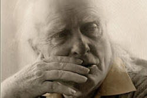

Semantics
Semantics is the study of meaning in language. It is a
sub-discipline of the science of semiotics which, roughly speaking,
is the study of meaning in general. There is, of course, a
distinction between meaning and meaning expressed via
language.
For example, which of the following represents meaning expressed
through language? Click on the table when you have an answer.
Whatever our personal views about whether dogs and cats
understand (or use) language or whether true language is a
phenomenon confined to humans, in what follows, we will be
discussing spoken or written language not the many other ways in
which meaning can be expressed. We will not, for example, be
dealing with body language but what follows does apply to the
various sign languages used by people around the world.
There is a guide to language evolution, linked below, which contains
some consideration of whether language is confined to humans or may
be said to be used by other animals.
 |
Words, lexemes and lemmas (or lemmata) |
The guide to morphology, linked at the end, takes trouble to distinguish between a word and a lexeme and explains why many tests for identifying what a word actually is fail. You should go to that guide for more detail.
Here we will simply note that the term word applies in
this guide to any meaningful item in English which can be made by
applying the normal rules of morphology. By this definition,
the following are lexemes even when they contain more than one word:
The European Union, Mars, washing machine, happiness,
undoability, redefinability, colourlessness, go on, look
forward (to)
Not all of these will be found in a standard dictionary, of course,
but that doesn't stop them from carrying a single significance and
functioning as words in English.
Strictly speaking, a lexeme is often defined as a set of related forms of the same word so, e.g., speak, speaking, spoken, spoke are all various forms of the single lexeme speak.
A lemma is what dictionaries use as headwords from which other forms are derived. You would not, for example, expect all the forms of the lexeme speak to have a separate entry in a dictionary. You would simply go to the lemma and from there discover, perhaps, that the past tense of the verb is irregular.
What does mean mean? |
There are three fundamental forms of meaning.
- Sense
This refers to a word's general significance.
For example, we can probably agree on the sense of the word coin. The word, as a noun, means a small metal unit of currency. This is the word's sense or its denotation.
One word can have a range of senses in which it is used. For example, coin can be a verb (with a number of meanings) and the word bank can refer to a business that deals with money, the side of a river, a verb meaning rely and a verb meaning deposit money. All of these are senses (or denotations) of the word. For more, see the guide to polysemy, linked in the list of related guides at the end. - Reference
This refers to the actual thing I mean (or the action etc. but for simplicity's sake, we'll focus on nouns). In other words, it is this instance of the word's use.
For example, if I say, The coin on the book, I know (and so do you) that I am referring not to coins in a general sense but to a particular one I have in mind. However, just by looking at the words, we have no idea what exactly I am referring to and in a different setting the referent (thing referred to) may be different. - Connotation
This refers to a second level of meaning above denotation and is often personally or culturally determined. For example, the words quack and doctor carry the same sense (medical practitioner) but mean very different things. The same can be said of a whole range of near synonyms such as youth-teen, child-brat, newspaper-rag, speech-sermon, dirt-filth, police officer-copper-cop and so on.
The distinction between denotational and connotational meaning goes under a variety of guises in the literature including extension meaning vs. intention meaning, definitional information vs. contextual information and core meaning vs. encyclopaedic knowledge.
The last of these is the route taken below.
Fuzziness
Before we leave a discussion of what words mean we need to deal
with the borderlines of meaning. For example, we may know what
we understand as the distinction between related verbs such as
climb and scramble but identifying exactly at which
point a scramble becomes a climb and vice
versa is quite difficult and will probably vary between
speakers of the language.We may equally be comfortable distinguishing, for example between
these related terms:
claw vs. talon
tooth vs. fang
tree vs. bush
hill vs. mountain
fire vs. blaze
red vs. pink
ill vs. poorly
walk vs. run
expect vs. anticipate
and so on.
However, precisely where we draw the line is clearly debatable.
Partly, we are discussing here something called troponymy.
Because, for example, walk and run (as well as
amble, stroll, wander, gallop, trot and so on) are ways of
moving on legs. In other words, they have a relationship of a
special kind of hyponymy.
The guide to lexical relationships, linked at the end, has a little
more on hyponymy and troponymy.
Often, we decide where the borders between meanings are on the basis of:
- contrasting the meanings with other related word so, for example, we may distinguish between red and pink by deciding whether it is a colour more closely approximating to rose or crimson.
- the context in which it occurs, preferring fang for the tooth of a large carnivore and tooth for that of a smaller animal or person.
- comparison with a prototype so we decide where the line is drawn between a mountain and a hill by simply comparing the size, characteristics and shape of what we see to a well-known prototype of a mountain such as Mont Blanc.
Meaning is, therefore, partly dependent on sense relations or categories of related meaning. This is the meat and drink of semantics.
Some words, of course, do not exhibit any obvious fuzziness and
they are mostly those which are carefully defined in certain fields
or are associated with particular objects. Examples of such
words are:
aspirin
carbohydrate
planet
triangle
logarithm
DVD
keyboard
etc.
However, among experts even more than among lay people some terms
may be the object of heated debates and the precise point at which a
place such as Pluto is downgraded to that of dwarf planet, for
example, was only settled in 2006 and many non-astronomers will
still refer to it as the ninth planet of the solar system.
 |
Two distinctions of meaning |
 |
Core meaning |
Allied to the distinction between denotation and connotation is
the concept, variously described and classified, of some sort of
core or basic meaning of a word and its meaning for whomever reads
or hears it.
Here we need to distinguish, as Aristotle did some time ago, between
a word's essential meaning and its reference meaning.
Aristotle referred to essence: the
essential qualities of a thing without which it loses its identity.
For example, if I hear:
Look. There's a dog in the garden
I will not randomly peer through the window trying to understand
what is meant but will immediately be alert to spot a four-legged,
furry object which matches my mental picture of dogness.
I have probably never seen the dog in question but I will
immediately recognise it because I have a set of mental constructs
which applies only to dogs. I will, therefore, not waste my
time looking at trees, ponds, unicorns or elephants because that is not what I
am primed to see.
What I am looking for is something which contains the semantic components of the word dog. I.e., it is animate, furry, four legged and of a certain size (a somewhat variable component).
How we do this is slightly mysterious but to try an explanation,
here's an example. Given a resource like this,
if someone says:
Please give me that cup
it will not be difficult for most people to recognise the object
which is being spoken about from a range of possible containers and
other objects in sight even if the cup in question has never been
seen before. To do that, people need a mental prototype of a
cup which distinguishes it from other sorts of objects. And to
do that, we assign characteristics (either positively or negatively)
which we use to distinguish cups from other objects. For example,
we may select the following as part of the essence or core meaning of the term
cup:
| Quality for cups | Yes | No | Maybe |
| designed to hold liquids |
|
||
| made of china or porcelain |
|
||
| made of glass |
|
||
| for hot liquids |
|
||
| roughly cylindrical |
|
||
| plastic | |||
| of any colour |
|
||
| transparent | |||
| with a handle |
|
||
| holding less than .5 litres |
|
||
| with a saucer |
However, if someone says,
Please give me that glass
we will recognise it by a different set of prototypical features:
| Quality for glasses | Yes | No | Maybe |
| designed to hold liquids |
|
||
| made of china or porcelain |
|
||
| made of glass | |||
| for hot liquids |
|
||
| roughly cylindrical |
|
||
| plastic | |||
| of any colour |
|
||
| transparent |
|
||
| with a handle |
|
||
| holding less than .5 litres | |||
| with a saucer |
|
When it comes to more closely related concepts, speakers of a
language will often disagree about what to call something.
For example:
Would you like a cup or a mug of coffee?
Did she stroll or amble here?
In the first of these examples, we have two hyponyms which bear
some relationship to a hypernym such as
food container.
In the second of those two examples, we encounter a
relationship between words called troponymy. That is to say,
both the words amble and stroll are ways of
further defining the concept of walk. However,
exactly how the nature of strolling differs from that of
ambling, wandering, sauntering, rambling, mooching and so
on is quite obscure and native speakers of a language are unlikely
to agree completely about where to draw the lines.
For a little more on these two concepts, see the guide to lexical
relationships, linked in the list at the end.
What we are discussing here is a word's semantic space
which concerns the
prototypical features of a word which determine the limits of its use.
Children, learning their first language, often make errors in this
regard, calling, for example, all four-legged creatures horses
or all adults apart from mother and father, uncle and so
on. Quite rapidly, children learn to identify the prototypical
features of lexemes and limit their use to within conventional,
culturally determined boundaries. This goes on through life
and most native speakers are frequently faced with uses of words
outside the fields in which they have previously been encountered.
Unfortunately, semantic space varies across languages and adults
already have a set of prototypical features which they employ
frequently to distinguish, for example between a cup and a
glass (using the ideas we discussed above such as with or without a handle,
transparent or opaque, porcelain or not etc.).
For example, in German, the word vegetable does not include
the term potato and in Swedish, the word wood for
the material and for a small group of trees is not the same although
it is, for example, in French.
Applying the conventional prototypical features that one has
acquired with one's first language to a second is, therefore, often
perilous.
Moreover, determining the boundaries of closely connected words such
as railing and fence, shade and
shadow, job and career, position and
post and so on is difficult and requires repeated exposure
to the lexemes in context. Even native speakers may disagree
about the determining features which distinguish a tree
from a shrub or a leaflet from a tract,
for example, and the distinguishing features of such terms are very
unlikely to be parallelled in the learners' first language(s).
This is not a phenomenon confined to nouns and the distinctions
between stroll, saunter and wander and chilly,
cool and fresh are not immediately apparent from
context.
The core meanings of railing and fence are
virtually identical (involving concepts of a barrier delineating
spaces) so only secondary features (such as the materials from which
it is made, the purposes to which it is put and its design), which
may not always be present, can be used to disambiguate.
Hunting the internet for images of either will often throw up the
same images in different categories.
To further complicate matters, individuals will vary in the
characteristics they see as essential and those which are optional.
Between cultures, variations will be even more obvious with German
speakers, for example, often excluding potato from the
general category of vegetable.
It is also the case that in German, any container for hot drinks
which does not have a saucer may be described as a mug [Becher]
but that definition will not function too well in English for a
small cup with a handle.
Semantic space can differ very dramatically across languages.
The selection will be made on the basis of choosing the object
which ticks most of the boxes and excluding those with forbidden
characteristics.
What we do, in the jargon, is to carry out a semantic or
componential analysis of,
in our example,
the terms cup and glass. When we do that, if
we are faced with two similar objects (or actions, adjectives or
whatever), we may use the optional
characteristics above to make our choice. So, for example, we
may exclude a container made of glass which has no handle in favour
of a glass one with a handle when we are searching for the cup in
question.
Alert readers will, however, have noticed a snag with an analysis like this: the distinctions are fuzzy at the edges. Some cups are made of glass, some glasses are made of plastic and so on. Aitchison, 1987, suggests that in addition to the prototypical features of the object, people also apply those characteristics with which they are most familiar so that, for example, speakers from certain cultural backgrounds may insist that all cups have handles and come with saucers but for others that distinction may not apply.
 |
Encyclopaedic knowledge |
In addition to all this, there is a distinction between the core
meaning (what we have discussed up to now) and what is sometimes
called encyclopaedic knowledge or extension meaning which refers to
what we know about the word from our general knowledge of the world.
Schmitt, 2000: 27, provides the example of the term bachelor,
the semantic analysis of which would be +human, +male, +adult and
-married or, in other words, an adult, unmarried, male human.
The issue here is that while the semantic definition holds true,
there's a lot we know about bachelors which is not included.
As Schmitt points out, this knowledge includes the fact that
bachelors are often young, date women
and have exciting lifestyles and none of that
information can be captured by a purely semantic analysis because it
forms part of the schema that native speakers have, in certain
cultures, concerning the state of bachelorhood. As Schmitt
points out, the core definition of bachelor would include
a divorced, middle-aged man with
several children or a male
who is unmarried, but living with his partner but our
encyclopaedic knowledge might act to exclude such people from the
definition.
The issue is twofold:
- Core semantic features of a word will be limited and can be taught by exemplification and helping learners to notice where the word starts and stops and how the concept is distinguished from similar concepts (as in the difference between cup and glass discussed above).
- Encyclopaedic knowledge is open ended and varies between cultures and individuals within cultures. The schema which for each person is activated by encountering a word such as farmer, for example, will be variable and some individuals (and some cultures) may exclude, for example, someone who has a smallholding on which she works part time or a large landowner who lives in the city and rarely visits a farm.
Encyclopaedic knowledge, incidentally, is part of the ability to
recognise impossible collocation. For example, if we encounter
words such as lacy, silky, smooth, velvety etc., our
knowledge of the world tells us that they cannot be applied to any
noun in the whole English lexicon (of which there are over 85,000).
One cannot have, for example,
a velvety rhinoceros
simply because the animal doesn't come that way.
Equally, of course, we know that verbs such as assert or
enjoy cannot have inanimate subjects because tables and
houses etc. do not do these things. Poetically, we may allow
many kinds of odd combinations for effect, of course.
For more in this area of what is called suppositional or
pre-suppositional meaning. See the guide to collocation,
linked below.
 |
Kinship terms and the packaging of information |
Core meaning and encyclopaedic knowledge is well exemplified when
considering kinship terms.
For example, in English the terms are relatively simple. We
can, for example, say:
He is my grandfather
That is my niece
That is her aunt
and so on.
From our encyclopaedic knowledge, we know that grandfather
is a male parent of someone's parents and we can define other
kinship terms in the same way: female offspring of a brother or
sister, sister of a parent etc.
However, when we ask what information is encoded in the terms, the
situation is somewhat rough and ready. When someone says, for
example:
That is my nephew
we know only that the person in question is one generation removed
(down the family tree) and is male. We do not know:
- whether the person is related to the speaker by blood or marriage
- whether the person is older or younger than the speaker
- whether the person is the son of a sister or a brother
- whether the person is the son of an older or younger sibling
- whether the person is a boy or a grown man
Equally, someone may say:
That is my uncle
and again, the details of the person and the precise family
relationships that exists remain unclear. In many
English-speaking societies, the man in question may not even be
related in any way to the speaker but the term uncle simply
denotes an older male friend of the speaker's parents. Even
less informative in this respect is:
That is my cousin
in which we do not even have access to the information about the
person's sex.
This is because languages encode the meanings that are socially
important and English-speaking culture, presumably, has seen no need
historically for the relationship details to be made clear.
Other languages will encode different data and make any or all of
the relationships (blood vs. marriage, older or younger, male or
female, connection to other family members and so on) clear in the
term that is chosen. Some, such as Sudanese, will be much more
informative and have words for cousin which distinguish
between
father's brother's children
father's sister's children
mother's sister's children
mother's brother's children
Tamil, an ancient South Indian language, too, has specific kinship
terms rendered by only two lexemes in English:
aunt: chitthi (mother's younger sister),
periyamma (mother's elder sister), mami (uncle’s wife)
uncle: chithappa (father's younger brother),
periyappa (father's elder brother).
Other languages may be even less informative than English. Some
Hawaiian languages, for example, do not distinguish between sibling
and cousin at all.
Kinship terms are just one of the areas in which languages choose to encode what is culturally important to them. Some languages will have single words to describe events and objects which need a whole sentence in other languages to explain. For example, some languages, will have separate verbs for go which distinguish whether the verb means go uphill, downhill, on foot or on horseback and others will have separate nouns to describe the same animals at different stages of their development and usefulness.
Schemata |
Schemata (singular schema) are sometimes called frames
or scripts.
The significance is that they activate our encyclopaedic knowledge
through context and that has very obvious implications for the
classroom and the teaching of lexical meaning.
For example, if one considers a simple sentence such as
The glasses were broken
it is likely that, without any other context, most people will have
their schema concerning glass drinking vessels activated.
However, given the context of being able to read a label and the
sentence
My glasses were broken
it is likely that the schema which will now be activated concerns
spectacles.
Given, as another example, the sentence:
The party was united
vs.
The party was noisy
it is likely that wholly different schemata will be activated simply
by the difference in the adjective used to describe party.
Because encyclopaedic knowledge, on which schemata work, is
variable from individual to individual and the core meanings of
words are not easily translated across languages or between
cultures, it becomes very important for teachers to provide adequate
data to allow learners to notice (or be told) what is and is not
included in a concept represented by a lexeme.
At the outset, it may be enough to define, for example, the verb
harvest by reference to well-known examples such as gathering
wheat, rice, vegetables etc. but that may not be enough to
distinguish the word from the idea of pick (as in flowers,
blackberries or other wild fruits) and it almost certainly won't be
enough to allow learners to understand that harvesting data
is possible but picking data has a wholly different
meaning.
Word meaning is learned incrementally with the learners'
understanding of limitations and inclusions in the meaning of a
lexeme being refined as more data become available.
It is, therefore, as important to help learners understand what is
excluded from a word means as it is to convey what is included.
For example, the comparatively simple idea conveyed by the word
steps (which might be explained as a series of flat surfaces on
which to climb up or down) needs to be refined by excluding carpeted
wooden examples inside houses but which will include metal external
fire escapes while probably excluding internal stone fire escapes.
The concept of register (i.e., the field, in Halliday's 1978
analysis) in which a word occurs is critical in this area.
If, for example, we know that we are listening to or participating
in a conversation about a parliamentary debate, we will almost
certainly understand the word minister differently from how
we would understand it if the conversation concerns church
employees.
Little by little, we are now moving from word and sentence
meaning to utterance meaning and here we trespass on the territory
of pragmatics. So be it.
However, before we move on, here's a summary of the story so far:
Compositionality |
You will readily see that knowing the senses of the individual
lexemes in a clause or phrase usually allows you access to the overall
meaning. For example, knowing the meaning and/or function of
completely, problem, the, is, clear, me, to
You can arrive at the meaning of the sentence:
The problem is completely clear to me
and
To me, the problem is completely clear
and even
Completely clear to me is the problem
That is what is meant by compositionality.
However, there are many instances of language when knowing the
sense of the constituent parts of a string of words will not allow
you access to the overall meaning. You may, for example, know
the meanings of
family, he, black, of, sheep, the, is
but that will not allow you to understand
He is the black sheep of the family
This is what is meant by non-compositionality. Idioms and
phrasal verbs are familiar examples of non-compositionality but it
is not an either-or distinction. Some idiomatic expressions
can be understood with access to the concept of metaphor and such
items vary in the level of transparency. So, for example
He put the meeting off until Wednesday
is reasonably transparent with an understanding that the particle
off frequently carries the meaning of away from
as in, e.g.:
He took the plate off the table
and
application of the meaning of the prepositional phrase helps, too,
of course. However,
He put up with her
is almost completely obscure unless you are aware of the meaning of
the multi-word verb put up with (=tolerate).
When it comes to idioms, some are often used quite literally and
some can only be understood as metaphors. For example:
She won by a hair's breadth
is an idiom in English which is fixed so you can't change
hair to strand or breadth to width
and retain the same meaning. It is, however, reasonably
transparent in suggesting a narrow margin of victory.
On the other hand, something like:
He made it by the skin of his teeth
is less transparent insofar as teeth do not have skin for one
thing. Indeed,
That doesn't cut the mustard
is almost wholly obscure and must be understood as a single
idea (not good enough).
There are, in other words, various levels of non-compositionality.
For more about this, see
the guide
to idiomaticity, linked at the end, which also covers the notion of fixedness.
 |
Use and Usage
|
The distinction here is between sentence meaning and utterance meaning and lies at the heart of communicative language teaching. The distinction can be summarised:
Usage means focusing on the meaning
attached to something as an instance of language isolated from
context. It is its signification
(what it means).
Use refers to the meaning of something when used for communicative
purpose. This is its value (what
it does).
For example:
A: Why don't you see a doctor if you are feeling so ill?
B: Mount Everest is very high and Mercury is the nearest planet to
the sun.
B's statement has significance (we know what is meant) but no value
(it communicates nothing useful).
(Widdowson, 1978)
Utterance meaning can be quite obscure and include attempts at
satire, irony and so on. Two obvious examples are hyperbole
and litotes.
Hyperbole is deliberate exaggeration for effect in, e.g.
There were millions of people at the party
It weighed a ton
when in neither case do we literally mean millions or a
ton.
Litotes is the polar opposite way to get the same effect in, e.g.
You'll find the centre of London a bit busy on Monday mornings
I drove to Greece and back from the UK so I've done a few miles
when in neither case is the downtoner (a bit and a few)
meant literally. The centre of London is actually extremely
busy at this time and there are more than a few miles between Greece
and the UK.
 |
Communicative force |
Another way to distinguish between sentence and utterance meaning
is to consider communicative force.
If for example, someone says:
The food is on the table
there are three possible communicative forces in play:
- Locutionary force
- The 'basic' or sentence meaning of what is said.
In our example, this would correspond to the meaning that the food is in the place I have specified. No more, no less.
Another way to say this is that you have understood the propositional content of the utterance. - Illocutionary force
- The meaning intended or the meaning perceived – the
utterance meaning.
In our example, the statement could mean, Please sit down and eat or a number of possible meanings such as It is getting cold. - Perlocutionary force
- This refers to the fact that an utterance like this may actually produce a reaction in the hearer. If, in this example, the hearers immediately come to the table, sit and begin to eat then the perlocutionary force of the statement has been demonstrated. In some instances, the simple utterance results in the effect. For example, I now pronounce you man and wife may result in the marriage with no intervening linguistic form.
The distinction between sentence meaning and utterance meaning is important for language teachers, of course. The distinction is also used to divide semantics proper (i.e., the study of sentence meaning) from pragmatics (i.e., the study of utterance meaning) but the distinction is neither clear cut nor universally accepted.
|  |
Gricean maxims |
Herbert Paul Grice's work is relevant in the area and to the
teaching of language using any communicative approach. It
bears some analysis here although it is also relevant to other areas
in this site.
If one starts from the premise that utterances have some kind of
illocutionary force, i.e., an intended meaning which the hearer
understands, we need to know something about the principles at work
which allow the meaning to be understood.
Grice's work is not, of course, without its critics so the following
is, at best, the theory, at worst, simply a hypothesis. There
are four main maxims which determine how interactions proceed.
Overriding all four is the Cooperative Principle. In Grice's
words, this is:
Make your contribution such as it is
required, at the stage at which it occurs, by the accepted purpose
or direction of the talk exchange in which you are engaged.
(Grice 1989: 26)
The four maxims we follow to achieve this are:
- THE MAXIM OF QUALITY:
- Don't say what you believe to be false.
- Don't say things for which you have no evidence.
- THE MAXIM OF QUANTITY:
- Be informative enough.
- Don't over-inform.
- THE MAXIM OF RELATION:
- Be relevant.
- THE MAXIM OF MANNER:
- Avoid obscurity.
- Avoid ambiguity.
- Be brief.
- Be orderly.
The issue here is not that we always follow these maxims but that we are subconsciously aware of them. When any are broken, we are immediately alert to the fact that something other than the sentence meaning is intended.
- Example 1:
- If in answer to
What time's dinner?
the response is
But you promised!
Then, on the face of things, the maxim of relevance has been breached because the response is not obviously relevant to the question. However, if the hearer is alert, she/he may presume that the response means something like
I'm not cooking because you promised to do it so you tell me when it'll be ready. - Example 2:
- If the response to:
I'll get myself a beer
is
There's a shop down the road, just by the post-office which sells all kinds of drinks, including beer
Then, on the face of it, the maxim of quantity has been breached because this is just too much information. However, the illocutionary force to which the hearer may be alerted could be
You should go and buy your own beer and not keeping helping yourself to mine. - Example 3:
- If the response to:
Lend me $200
is
Pigs might fly
Then it seems that both the maxim of quality and the maxim of relevance have been broken but the response may simply mean
It is about as likely that I will lend you $200 as pigs flying (i.e., not particularly). - Example 4:
- Jokes are rich sources of maxim breaking precisely because
they rely so often on unexpected responses to utterances.
For example:
I rang the bell of a bed-and breakfast place and a lady appeared at a window.
"What do you want?" she asked.
"I want to stay here," I replied.
"Well, stay there then," she said and closed the window.
which breaks the maxim of quality at least and probably the maxim of relevance by deliberately misunderstanding what is meant by here.
There's a good deal more on Gricean maxims and their classroom implications in the guide to pragmatics on this site.
Jokes and breaking maxims |
Here's a joke for you to try. What maxims are being broken?
Click here when you have an answer.
There is a woman
sitting on a park bench and a large dog lying on the ground in front
of the bench. A man comes along and sits down on the bench.
MAN: Does your dog bite?
WOMAN: No.
(The man reaches down to stroke the dog which bites him.)
MAN: Ouch! Hey! I thought you said your dog doesn't bite!
WOMAN: He doesn't. That's not my dog.
The
woman breaks the maxim of quantity because it is clear that the man
is referring to the dog in sight. He has no way of knowing
that she has a different dog and it is natural to assume that the
dog is hers. She has been economical with the truth and
provided too little information.
She is also breaking the maxim of relevance by referring to another
dog which is not present.
The whole joke (if it can be called that) is dependent on breaking
the cooperative principle.
 |
Other guides |
The whole area of semantics (and pragmatics) underlies the theory of language which informs almost any teaching approach. The following guides become clearer in the light of semantic theory and reference to this guide.
| Related guides: | |
| suasion | focusing on some key functions in English more easily understood in relation to utterance meaning |
| CLT | the guide to Communicative Language Teaching |
| morphology | focusing on how words are constructed and what their individual parts signify |
| idiomaticity | focusing on (non-)compositionality and notions of fixedness |
| polysemy | focusing on multiple word senses and other relationships such as synonymy and metonymy |
| lexical relationships | focusing on lexical relationships such as hyponymy, troponymy and antonymy |
| collocation | for more on suppositional meaning |
| language, thought and culture | for some considerations of whether language determines thought or whether the reverse is true |
| the evolution of language | a guide which contains consideration of how the arbitrary nature of words and their meanings may have evolved |
| multi-word verbs | focusing on these verbs and also on notions of transparency and derived meaning of particles |
| function words | the guide to help with recognising different levels of meaning |
| deixis | although not central to semantic analysis, notions of reference are applicable to this area |
| pragmatics | this extends many of the considerations of the second half of this guide |
If you would like to take an easy test on all of this, click here.
References:
This is a huge area, much researched and written about. Many
studies of semantics focus on cross-linguistic comparisons,
sometimes of obscure and exotic languages, and are less than helpful
for English language teachers. However:
Aitchison, J, 1987, Words in the Mind: An introduction to the
mental lexicon, Oxford: Blackwell
Grice, HP, 1989, Studies in the Way of Words, Harvard: Harvard
University Press
Halliday, MAK, 1978, Language as a Social Semiotic, London:
Edward Arnold
Reimer, N, 2010, Introducing Semantics, Cambridge:
Cambridge University Press is an accessible source.
Schmitt, N, 2000, Vocabulary in Language Teaching,
Cambridge: Cambridge University Press
Widdowson, HG, 1978, Teaching Language as Communication, London:
Oxford University Press is also accessible and to the point.